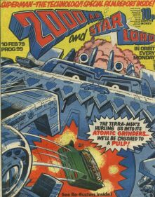
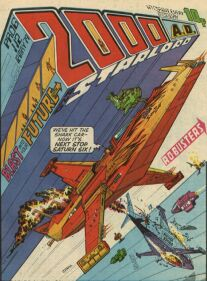
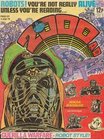
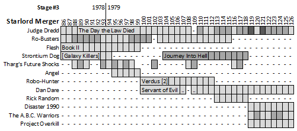

|  |  |  |
| Prog 99 by Dave Gibbons | Prog 112 by Kevin O'Neill | Prog 125 by Mike McMahon |
The merger with Starlord pushes back publication of some ongoing thrills, but injects new found strength into the nascent prog with the inclusion of Strontium Dog and Ro-Busters (which soon morphs into The A.B.C. Warriors). The line-up of the jump-on prog 86 is ridiculously strong (Dredd, Ro-Busters, Flesh & Strontium Dog) and echos down the ages: thirty-six years later prog 1862 features Dredd, The A.B.C. Warriors and Strontium Dog (with a Flesh series having just completed its run in the previous issue).
Prog 100 sees the chance to fold back in the missing second part to Robo-Hunter's Verdus storyline and Dan Dare returns for the final segment of his tenure. Prog 119 provides the next mini jump-on but the wind is picking up: there's a Tornado on the way...
Judge Dredd
Seems like Dredd can't catch a break: after getting out of that dead-end Luna posting he had to crawl across the Cursed Earth to save a city he only ends up nuking a few years later anyway. Finally he gets back to the city for some R&R but before he can sentence a juve to six months in a cube for wall scrawling he's been framed for murder and the maniac Judge Cal (who bears more than a passing resemblence to one P. Mills) has sentenced the city to death (starting with Aaron A. Aardvark, naturally) in The Day the Law Died. It's after these back-to-back epics that Mega-City One (a setting as important to the longevity of the strip as the Dredd that cares for it) gets a chance to show us what makes it tick, and we move into a sequence of shorter stories.
More world-building next stage before a launch into space...
Ro-Busters *ADOPTED*
Thunderbirds, but with robots! The best bit is The Terra-Meks in progs 98-101.
Mills soon morphs this into The A.B.C. Warriors...
Flesh: Book II
Like Flesh, but fishy.
Returns with The Legend of Shamana starting in prog 800 (13 years from here).
Strontium Dog *ADOPTED*
Clearly iconic thrill that's vital to 2000 AD: arguably these earliest entries in the prog (The Galaxy Killers and Journey into Hell) aren't as strong as the subsequent set.
Returns in the vital prog 178...
Tharg's Future Shocks
Usually one-off tales with a twist.
More in the next stage...
Angel *NEW THRILL*
A sort of British Bionic Man ... wait! Didn't we already do this in M.A.C.H. 1? You'll believe a man can fly! Well, not actually, but it tries its best.
It's over and done with (although later writers are fond of using Harry Angel in deliberately cheesy cameos, starting in 1994's Armoured Gideon).
Robo-Hunter: Verdus [part 2]
Sam Slade concludes his time on the crazy planet of Verdus. If you haven't already, this is worth catching just for the sheer volume of droids that Ian Gibson is capable of conjuring into existence.
Sam's back on Earth in prog 152.
Dan Dare: Servant of Evil
Dare starts to impersonate The Steel Claw (Valiant) by getting himself a Cosmic Claw, but then he's arrested for theft so has to clear his name. It's like The Fugitive, but Dan is the one-armed man.
This is really it for Dare in the prog, although a version of him turns up in Revolver in 1990, and there's a Dan Dare 3000 AD in the prog 1034 supplement (but I don't own a copy). Oh, plus he shows up again in the Eagle comic. He's sort of like a template on which each new generation stamps their ideas.
Rick Random: The Riddle Of The Astral Assassin *ADOPTED*
Fifties thrill in a seventies punk comic sounds a bit too random. This smacks of some sort of emergency choice from the editor.
It's over and done with.
Disaster 1990 *PREQUEL*
Rather than fend off an invading army, this prequel to Invasion sees Bill Savage deal with a high water table. This may all have been a fever dream of Bills, though, as the global flood seems not to have happened at all nine years later.
Continues in the next stage...
The A.B.C. Warriors *SPIN-OFF*
Hired to clean-up Mars: seven robotic warriors spread the word.
Continues in the next stage...
Project Overkill *NEW THRILL*
Some kind of uncovering of an AI world takeover plot.
It's over and done with.
The Starlord merger was foreshadowed editorially by Mek-Quake and Ro-Jaws showing up in the Nerve Centre (as early as prog 78) and serving as foils to Tharg. Ro-Jaws can often be heard decrying Tharg as a "daft nerk". Somehow Mek-Quake is also in Walter the Wobot's strip in progs 84 & 85.
Loved the way Ro-Jaws and Hammerstein (and Mek-Quake) were added to the editorial staff. It all supplemented the idea that there was this 'cool' club thing going on and Ro-Jaws kinda represented us scruffy kids.
As part of the merger we get a new editorial regularity in the shape of Ro-Jaws and Hammerstein's Laugh-In, running from progs 86-103, then petering out with a final hurrah in progs 116-118.
Prog 99 sees a film report on Superman.
Holiday to Mars is a diagrammatic poster series (progs 96-102) with some space-faring kit that would get Elon Musk drooling. (Apologies to those for whom mention of Musk results in hives.)
Progs 119-122 sees the collectible Book of Robots to tie in with the launch of The A.B.C. Warriors.